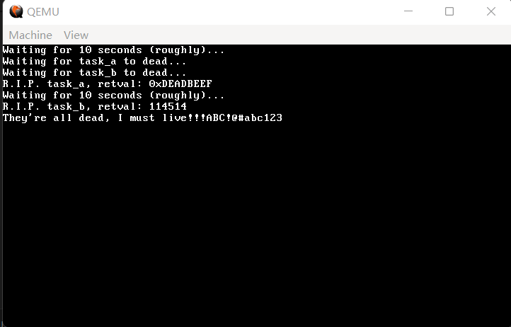
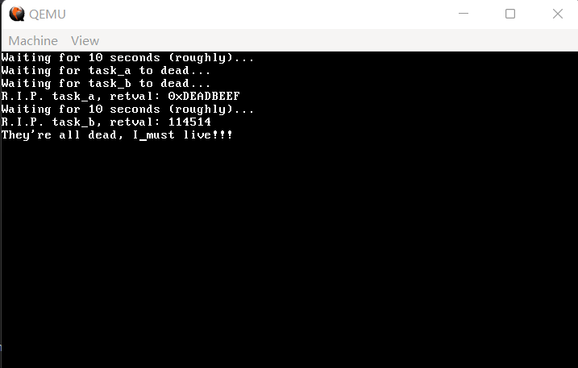
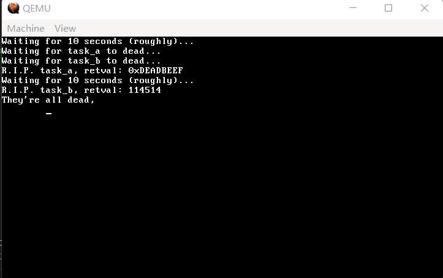
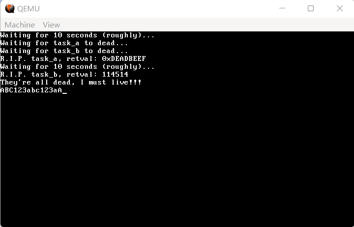
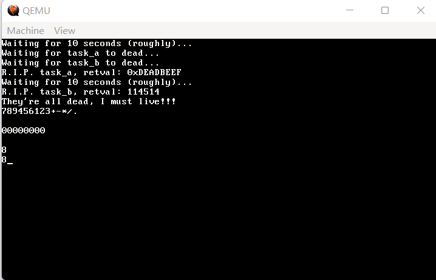
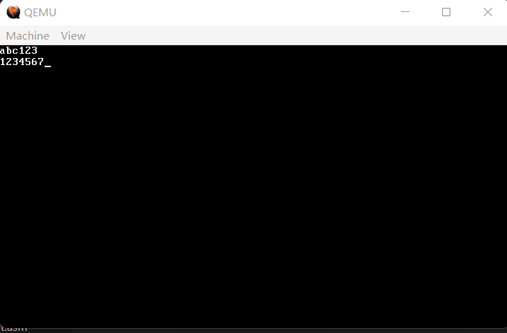

14 终于可以打字了——键盘驱动（下）
欢迎回来，我们继续键盘驱动的旅途。
首先，是三个最基本的东西：shift、alt 和 ctrl。这三个东西我们完全没有处理，特别是 shift，导致我们现在任何一个大写字母都打不出来。
修改一下 keyboard.c，先在最开头写下这几个全局变量，记录 shift、alt、ctrl 的状态：
代码 14-1 shift、alt、ctrl 的状态（drivers/keyboard.c）
static int code_with_E0 = 0;
static int shift_l;
static int shift_r;
static int alt_l;
static int alt_r;
static int ctrl_l;
static int ctrl_r;
static int caps_lock;
static int num_lock;
static int scroll_lock;
static int column;
然后是现在的 keyboard_read：
代码 14-2 带 shift 的扫描码解析（drivers/keyboard.c）
static void keyboard_read()
{
uint8_t scancode;
int make;
uint32_t key = 0;
uint32_t *keyrow;
if (fifo_status(&keyfifo) > 0) {
scancode = get_scancode();
if (scancode == 0xE1) {
// 特殊开头，暂不做处理
} else if (scancode == 0xE0) {
code_with_E0 = 1;
} else {
make = scancode & FLAG_BREAK ? false : true;
keyrow = &keymap[(scancode & 0x7f) * MAP_COLS];
column = 0;
if (shift_l || shift_r) {
column = 1;
}
if (code_with_E0) {
column = 2;
code_with_E0 = 0;
}
key = keyrow[column];
switch (key) {
case SHIFT_L:
shift_l = make;
key = 0;
break;
case SHIFT_R:
shift_r = make;
key = 0;
break;
case CTRL_L:
ctrl_l = make;
key = 0;
break;
case CTRL_R:
ctrl_r = make;
key = 0;
break;
case ALT_L:
alt_l = make;
key = 0;
break;
case ALT_R:
alt_r = make;
key = 0;
break;
default:
if (!make) key = 0;
break;
}
if (key) monitor_put(key);
}
}
}
在实现 shift 的同时，我们过滤了 ctrl 和 alt，判断是否释放也改为了判断是否按下，同时会在适当的时候忽略 key 的值。
编译，运行，按下 shift 和不按 shift 分别输入 abc123，效果如图所示：

（图 14-1 实现 shift）
现在的 keyboard_read 对按键的处理仅限于打印，为了匹配以后更加复杂的需求，我们单独创建一个 in_process 用来处理不同的按键。
把 if (key) monitor_put(key) 替换为：
代码 14-3 对按键进行编码（drivers/keyboard.c）
if (make) {
key |= shift_l ? FLAG_SHIFT_L : 0;
key |= shift_r ? FLAG_SHIFT_R : 0;
key |= alt_l ? FLAG_ALT_L : 0;
key |= alt_r ? FLAG_ALT_R : 0;
key |= ctrl_l ? FLAG_CTRL_L : 0;
key |= ctrl_r ? FLAG_CTRL_R : 0;
in_process(key);
}
这里相当于对 key 进行了编码，同时将当时所有的按键状态编码了进去。
然后是 in_process，把它放在 keyboard_read 之前。
代码 14-4 in_process（drivers/keyboard.c）
static void in_process(uint32_t key)
{
if (!(key & FLAG_EXT)) {
monitor_put(key & 0xFF);
}
}
编译，运行，效果仍应如图 14-1所示。
下面是对回车、退格和 tab 行为的单独处理，我们只需要找出 ENTER、 BACKSPACE 以及 TAB，改为打印 \n、 \b 以及 \t。
代码 14-5 回车、退格与 TAB（drivers/keyboard.c）
static void in_process(uint32_t key)
{
if (!(key & FLAG_EXT)) {
monitor_put(key & 0xFF);
} else {
int raw_key = key & MASK_RAW;
switch (raw_key) {
case ENTER:
monitor_put('\n');
break;
case BACKSPACE:
monitor_put('\b');
break;
case TAB:
monitor_put('\t');
break;
}
}
}
编译，运行，待 task_c 输出后连按数次退格，效果如下：

（图 14-2 BACKSPACE 的异常）
我们发现，光标虽然成功后移，但字符都还在。这是在 monitor_put 中对 \b 的判断中应当处理的，找到 monitor_put 中的第一个判断，我们来做一个专项修改：
代码 14-6 对退格键的修改（kernel/monitor.c）
if (c == 0x08 && cursor_x) // 退格，且光标不在某行开始处
{
cursor_x--; // 直接把光标向后移一格
video_memory[cursor_y * 80 + cursor_x] = 0x20 | (attributeByte << 8); // 空格
}
再次编译，运行，待 task_c 输出信息后，按若干次退格并按下 \n、\t，效果如下：

（图 14-3 成功删除字符）
由此即可证明，对这三个键的处理可以暂告一段落。乘胜追击，我们来处理键盘上有指示灯的三个键：CapsLock、NumLock 和 ScrollLock（什么？Fn？这玩意真的在 PS/2 键盘上？）。
对键盘指示灯的操控需要借助我们之前遇到的 0x60 端口，也要借助键盘控制器的另一个端口——0x64。
如何设置键盘指示灯的情况呢？非常简单，大致分为如下几步：
-
读出控制器端口
0x64对应的数据，观察其从低往高第2位是否为 0，若为 0，代表当前可向0x60端口发送命令； -
向
0x60端口发出命令0xED，意为设置键盘 LED 灯状态。键盘控制器收到命令后，会在0x60端口发送一个0xFA，我们需要等待这个0xFA返回。 -
向
0x60端口发出希望设置的键盘 LED 灯状态，它应被编码为一个字节，高5位均为0，从低往高数第1、2、3位分别为ScrollLock、NumLock和CapsLock，其中每一位的 0 为熄灭，1 为亮起。 -
键盘设置完 LED 灯状态后，会再次发送一个
0xFA需要我们读出。
好了，在我们前面设置 shift、ctrl 和 alt 状态的时候已经增加了这三个 lock 指示灯的变量，我们来针对上面的四步分别写程序。
首先，我们来创建一个设置 LED 灯状态的函数，实际使用时只需要往 caps_lock、num_lock 和 scroll_lock 三个变量中写指示灯状态即可（请把它们放在 get_scancode 之前）。
代码 14-7 设置 LED 状态（drivers/keyboard.c）
static void kb_wait()
{
uint8_t kb_stat;
do {
kb_stat = inb(KB_CMD); // KB_CMD: 0x64
} while (kb_stat & 0x02);
}
static void kb_ack()
{
uint8_t kb_data;
do {
kb_data = inb(KB_DATA); // KB_DATA: 0x60
} while (kb_data != KB_ACK); // KB_ACK: 0xFA
}
static void set_leds()
{
uint8_t led_status = (caps_lock << 2) | (num_lock << 1) | scroll_lock;
kb_wait();
outb(KB_DATA, LED_CODE); // LED_CODE: 0xED
kb_ack();
kb_wait();
outb(KB_DATA, led_status);
kb_ack();
}
其中的 KB_CMD、KB_DATA、KB_ACK 以及 LED_CODE 已经定义在 keyboard.h 之中了。
接下来我们对 init_keyboard 略作修改，初始化 LED 灯的状态。
代码 14-8 新版 init_keyboard（drivers/keyboard.c）
void init_keyboard()
{
fifo_init(&keyfifo, 32, keybuf);
shift_l = shift_r = 0;
alt_l = alt_r = 0;
ctrl_l = ctrl_r = 0;
caps_lock = 0;
num_lock = 1;
scroll_lock = 0;
set_leds();
register_interrupt_handler(IRQ1, keyboard_handler);
}
之所以设置 num_lock 为 1，是因为小键盘的数字功能一般比方向功能常用。不过，设置了也还没有用，我们紧接着对 caps_lock 和 num_lock 的状态作出判断。
我们首先添加当按下这三个键时更改状态和 LED 灯状态的处理，然后是添加了 CapsLock 按下时的实际功能。
代码 14-9 LED 灯状态的变换以及 CapsLock 的实际功能（drivers/keyboard.c）
static void keyboard_read()
{
uint8_t scancode;
int make;
uint32_t key = 0;
uint32_t *keyrow;
if (fifo_status(&keyfifo) > 0) {
scancode = get_scancode();
if (scancode == 0xE1) {
// 特殊开头，暂不做处理
} else if (scancode == 0xE0) {
code_with_E0 = 1;
} else {
make = scancode & FLAG_BREAK ? false : true;
keyrow = &keymap[(scancode & 0x7f) * MAP_COLS];
column = 0;
int caps = shift_l || shift_r;
if (caps_lock) {
if ((keyrow[0] >= 'a') && (keyrow[0] <= 'z')) caps = !caps;
}
if (caps) {
column = 1;
}
if (code_with_E0) {
column = 2;
code_with_E0 = 0;
}
key = keyrow[column];
switch (key) {
case SHIFT_L:
shift_l = make;
break;
case SHIFT_R:
shift_r = make;
break;
case CTRL_L:
ctrl_l = make;
break;
case CTRL_R:
ctrl_r = make;
break;
case ALT_L:
alt_l = make;
break;
case ALT_R:
alt_r = make;
break;
case CAPS_LOCK:
if (make) {
caps_lock = !caps_lock;
set_leds();
}
break;
case NUM_LOCK:
if (make) {
num_lock = !num_lock;
set_leds();
}
break;
case SCROLL_LOCK:
if (make) {
scroll_lock = !scroll_lock;
set_leds();
}
break;
default:
break;
}
if (make) {
key |= shift_l ? FLAG_SHIFT_L : 0;
key |= shift_r ? FLAG_SHIFT_R : 0;
key |= alt_l ? FLAG_ALT_L : 0;
key |= alt_r ? FLAG_ALT_R : 0;
key |= ctrl_l ? FLAG_CTRL_L : 0;
key |= ctrl_r ? FLAG_CTRL_R : 0;
in_process(key);
}
}
}
}
这里实际的代码增加的不多，主要是大的 switch-case 增加了几个 lock 键，以及 code_with_E0 上面几行对 caps_lock 状态的处理。
编译，运行，等待 task_c 输出完成后，依次按下：
ENTER、CapsLock、a、b、c、1、2、3、CapsLock、a、b、c、1、2、3、CapsLock、Shift+A、A，
效果如下：

（图 14-4 CapsLock 的实际效果）
最后，是对 NumLock 的处理，请用下面这一长串替换掉 keyboard_read 中 if (make) 的分支：
代码 14-10 NumLock（drivers/keyboard.c）
if (make) {
int pad = 0;
if ((key >= PAD_SLASH) && (key <= PAD_9)) {
pad = 1;
switch (key) {
case PAD_SLASH:
key = '/';
break;
case PAD_STAR:
key = '*';
break;
case PAD_MINUS:
key = '-';
break;
case PAD_PLUS:
key = '+';
break;
case PAD_ENTER:
key = ENTER;
break;
default:
if (num_lock && (key >= PAD_0) && (key <= PAD_9)) {
key = key - PAD_0 + '0';
} else if (num_lock && (key == PAD_DOT)) {
key = '.';
} else {
switch (key) {
case PAD_HOME:
key = HOME;
break;
case PAD_END:
key = END;
break;
case PAD_PAGEUP:
key = PAGEUP;
break;
case PAD_PAGEDOWN:
key = PAD_PAGEDOWN;
break;
case PAD_INS:
key = INSERT;
break;
case PAD_UP:
key = UP;
break;
case PAD_DOWN:
key = DOWN;
break;
case PAD_LEFT:
key = LEFT;
break;
case PAD_RIGHT:
key = RIGHT;
break;
case PAD_DOT:
key = DELETE;
break;
default:
break;
}
}
break;
}
}
key |= shift_l ? FLAG_SHIFT_L : 0;
key |= shift_r ? FLAG_SHIFT_R : 0;
key |= ctrl_l ? FLAG_CTRL_L : 0;
key |= ctrl_r ? FLAG_CTRL_R : 0;
key |= alt_l ? FLAG_ALT_L : 0;
key |= alt_r ? FLAG_ALT_R : 0;
key |= pad ? FLAG_PAD : 0;
in_process(key);
}
这一部分的算法其实仍旧是简单的枚举。枚举每一个键，看它是不是在小键盘上，有的键不受 NumLock 控制，因此可以不管；有的键受 NumLock 控制，所以根据 NumLock 是否亮起判断到底是原本的键还是要转换一下。
编译，运行，依次按下小键盘上的：
Enter、7、8、9、4、5、6、1、2、3、+、-、*、/、.、Enter、Enter、0、0、0、0、0、0、0、0、Enter、Enter，
然后是不在小键盘上的上下左右方向键，按下 Enter，再按下不在小键盘上的上下左右方向键，效果如下：

（图 14-5 NumLock 的实际效果）
前面小键盘的测试部分倒是符合预期，但是为什么上下左右方向键会输出一个 8 呢（有的机型甚至会输出 8246）？
通过回到第 13 节开篇的状态打印扫描码我们发现，原来是 qemu 对 PS/2 键盘的模拟出了点故障，将 0xE0 这一本该放在前面的字节放在了后面，导致我们的键盘驱动先接收到要打印小键盘的 8（没错，方向键和小键盘上的键扫描码相同，只是后面跟了个 0xE0），然后接收到 0xE0，0xE0 就被后续的方向键所匹配了（有的甚至都匹配不上）。对此我们有几个解决方案：要么干脆摆烂直接不管，要么做一个补丁。
但是，经过进一步的测试，我们发现不同版本的 QEMU 有不同的模拟逻辑，有的 QEMU 甚至直接不区分方向键和小键盘的方向键，那这个补丁自然没法打，所以就此开摆！
最后，我们把 in_process 中的打印字符改为向特定的 FIFO 中放入字符，由 kernel_main 或者别的什么地方从这里面读取。
代码 14-11 in_process 最终版（drivers/keyboard.c）
static void in_process(uint32_t key)
{
if (!(key & FLAG_EXT)) {
fifo_put(&decoded_key, key & 0xFF);
} else {
int raw_key = key & MASK_RAW;
switch (raw_key) {
case ENTER:
fifo_put(&decoded_key, '\n');
break;
case BACKSPACE:
fifo_put(&decoded_key, '\b');
break;
case TAB:
fifo_put(&decoded_key, '\t');
break;
}
}
}
在文件开头添加两行 fifo_t decoded_key; 以及 uint32_t dkey_buf[32];，在 init_keyboard 中加入一行 fifo_init(&decoded_key, 32, dkey_buf);，我们的键盘驱动就此完结。
最新版的测试用 main.c 完整版如下：
代码 14-12 键盘驱动最终测试（kernel/main.c）
#include "monitor.h"
#include "gdtidt.h"
#include "isr.h"
#include "timer.h"
#include "memory.h"
#include "mtask.h"
#include "keyboard.h"
#include "fifo.h"
extern fifo_t decoded_key;
task_t *create_kernel_task(void *entry)
{
task_t *new_task;
new_task = task_alloc();
new_task->tss.esp = (uint32_t) kmalloc(64 * 1024) + 64 * 1024 - 4;
new_task->tss.eip = (int) entry;
new_task->tss.es = new_task->tss.ss = new_task->tss.ds = new_task->tss.fs = new_task->tss.gs = 2 * 8;
new_task->tss.cs = 1 * 8;
return new_task;
}
void kernel_main() // kernel.asm会跳转到这里
{
monitor_clear();
init_gdtidt();
init_memory();
init_timer(100);
init_keyboard();
asm("sti");
task_t *task_a = task_init();
while (1) {
if (fifo_status(&decoded_key) > 0) {
monitor_put(fifo_get(&decoded_key));
}
}
}
编译，运行，输入 abc123、enter、1234567，效果如下：

（图 14-6 一片空旷）
我们看到，现在的OS启动时屏幕一片空旷，它成了一个完完全全的打字机。这也算是我们人机交互的初步成果了。
键盘相关的处理到此结束，下一节，我们开始脱离内核，向用户层迈进。